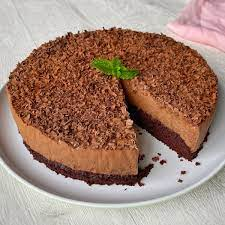
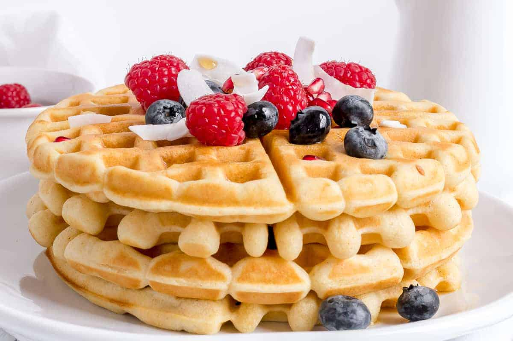
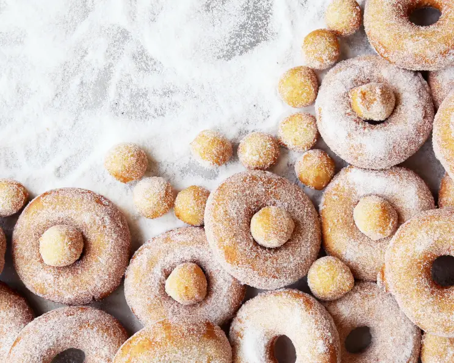

Gluten-Free Desserts
Worried you'll never be able to enjoy your favorites desserts once you go gluten-free? Fear not, sugar lovers!
Gluten Free Waffles
This recipe is easily halved or multiplied, as needed. These are also excellent to use as sandwich bread, sloppy joe open-face bread, (better if you omit the sugar and use regular milk instead of buttermilk); strawberry shortcake, etc. Refrigerate any leftovers and warm about 15-20 seconds in microwave before filling with sandwich stuff.
Amazing Gluten-Free Buttermilk Donuts
They look like the real thing, they taste like the real thing, and best of all they're really not all that hard to make. The Gluten-Free Rice Flour Mix for this recipe is made of 3 cups white rice flour, 3 cups brown rice flour, 2 cups potato starch (not flour) and 1 cup tapioca starch. Based on a recipe from the GF-Utah site.